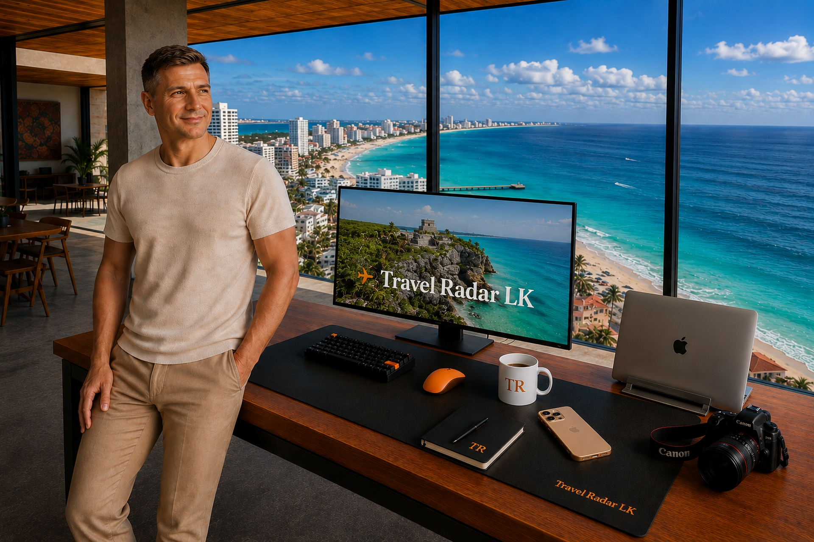

Travel Radar LK — незалежний travel-проєкт із головним фокусом на Мексиці та Карибах (Канкун, Рів'єра-Майя, Тулум і Домінікана), що надає практичні гайди для планування поїздок.
Проєкт **Travel Radar LK** створений, щоб допомогти мандрівникам ухвалювати більш виважені рішення: у якому районі зупинитися, які приховані витрати закласти в бюджет і як уникнути маркетингових пасток під час вибору готелю.
Ми не публікуємо поверхневі захоплені огляди. Наш фокус — це структурована, чесна інформація, що базується на глибокому дослідженні.
Ми вважаємо, що правильний вибір району важливіший за вибір конкретного готелю. Ось як ми підходимо до дослідження кожного напрямку.
Ми розділяємо величезні курортні зони (наприклад, Hotel Zone у Канкуні) на мікрорайони з детальним описом плюсів і мінусів кожного.
Ми аналізуємо вартість трансферів і віддаленість від аеропортів та поромів. Дешевий готель далеко від інфраструктури часто обходиться дорожче.
Кожен гайд проходить суворий редакційний контроль. Ось як ми створюємо наші матеріали:
Ми не вдаємо, що одна людина особисто відвідала тисячі готелів. Travel Radar LK — це злагоджена робота невеликої команди з різною експертизою.
Леонід заснував Travel Radar LK і розробив його дослідницьку методологію. Як головний редактор він контролює стандарти досліджень, редакційний напрямок та фінальну перевірку кожного гайда. Замінюючи поверхневі оцінки парсингом тисяч відгуків, вивченням супутникових карт та оцінкою логістики, він допомагає відокремити реальні факти від маркетингового шуму.
Цей аналітичний підхід був сформований більш ніж двадцятирічним досвідом управління складними ІТ-інфраструктурними проєктами на позиції Senior Infrastructure & Systems Engineer — дисципліна, яку він тепер успішно застосовує до travel-досліджень.
Переглянути профіль у LinkedInНародився і виріс на острові Сент-Томас (Американські Віргінські острови). Як корінний житель, Кімалі володіє глибоким розумінням регіональної історії, культури та специфіки острівного життя.
Його армійський бекграунд у США та увага до деталей допомагають проєкту в моніторингу регіональних новин, фактчекінгу та оцінці реальної ситуації. Кімалі регулярно бере участь у редакційних обговореннях, допомагаючи нашим гайдам відображати місцевий контекст, а не поверхневі здогадки аутсайдерів.
Професійна американська журналістка, випускниця Університету Вісконсін-Медісон. Після багатьох років роботи редактором журналу про подорожі в Денвері, Клер переїхала до Пуэрто-Морелос — невеликого прибережного містечка між Канкуном і Плайя-дель-Кармен.
Вона відвідала понад 24 із 32 штатів Мексики, досліджуючи не лише популярні курорти, а й приховані сеноти та автентичні міста. Клер відповідає за оцінку реальної атмосфери мексиканських напрямків, розробку авторських маршрутів та управління візуальним контентом проєкту.
Бачачи, наскільки необ'єктивними стали багато туристичних відгуків, ми розробили власну методологію досліджень.
Ми запустили наші перші глибокі огляди Канкуна та Рів'єри-Майя.
Ми випустили понад 130 детальних матеріалів для планування поїздок.
Ми безперервно оновлюємо наявні гайди та активно розширюємо наше покриття, додаючи нові напрямки на Карибах.
Наш редакційний фокус насамперед спрямований на Мексику, з активним розширенням матеріалів по Домініканській Республіці та інших країнах Карибського басейну.
Ми віддаємо пріоритет статистиці, геолокации та агрегованим даним над суб'єктивними враженнями.
Ми не приймаємо гроші за огляди готелів і не продаємо місця в рейтингах. Усі рекомендації базуються виключно на нашому власному аналізі.
На сайті присутні партнерські посилання. При переході за ними вартість бронювання для вас не збільшується, але це допомагає нам підтримувати незалежність проєкту.
Знайшли неточність в огляді? Хочете запропонувати ідею для дослідження або поділитися своїм досвідом? Ми будемо раді вашему повідомленню.
contact@travelradarlk.com